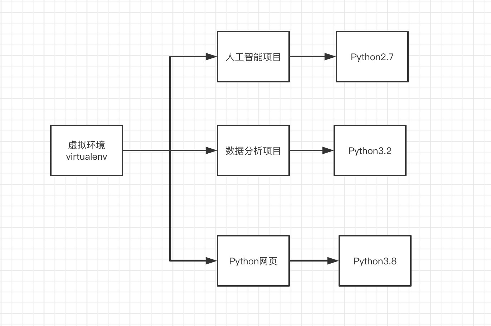

Python虚拟环境——virtualenv
在python开发中，python的各种库跨度比较大，比如如果你开发网页，一个项目使用Django版本为1.8， 而另一个项目使用Django版本是1.7， 这就给开发人员带来很多麻烦。
而virtualenv就是解决这种情况的，virtualenv通过创建一个虚拟化的python运行环境，将我们所需的依赖安装进去的，不同项目之间相互不干扰。

上面的这种情况在其他语言里面特别不好解决，而在Python里面就比较好解决。
1. 安装
安装虚拟环境特别简单，我们之前学过pip 包管理，直接使用就好。
pip install virtualenv
2. 测试安装
virtualenv --version
3. 为项目创建虚拟环境
- 进入指定的目录
- virtualenv 自定义名称。
cd project
virtualenv your_project_name
另外，如果存在多个python解释器，可以选择指定一个Python解释器（比如python2.7），没有指定则由系统默认的解释器来搭建：
virtualenv -p python2.7 项目名
4. 激活虚拟环境
source 虚拟项目名 activate
这样您就进入到了自己创建的虚拟环境中了。
5. 退出虚拟环境
deactivate
virtualenvwrapper
提供了一系列命令使得和虚拟环境工作变得愉快许多。它把您所有的虚拟环境都放在一个地方。
- 将您的所有虚拟环境在一个地方。
- 包装用于管理虚拟环境（创建，删除，复制）。
- 使用一个命令来环境之间进行切换。
1、安装
安装（确保 virtualenv 已经安装了）：
pip install virtualenvwrapper
export WORKON_HOME=~/Envs #设置环境变量
mkdir -p $WORKON_HOME #创建虚拟环境管理目录
find / -name virtualenvwrapper.sh #找到virtualenvwrapper.sh的路径
source 路径 #激活virtualenvwrapper.sh
默认virtualenvwrapper安装在下面python解释器中的site-packages，实际上需要运行virtualenvwrapper.sh文件才行；所以需要先进行配置一下：
找到virtualenvwrapper.sh的路径：find / -name virtualenvwrapper.sh- 运行virtualenvwrapper.sh文件：source 路径
ps：每次要想使用virtualenvwrapper 工具时，都必须先激活virtualenvwrapper.sh,另外，如果创建前要将即将的环境保存到Envs中，就要先设置一下环境变量：export WORKON_HOME=~/Envs，再搭建
对于Windows，您可以使用 virtualenvwrapper-win
安装（确保 virtualenv 已经安装了）：
pip install virtualenvwrapper-win
在Windows中，WORKON_HOME默认的路径是 %USERPROFILE%Envs 。
2、基本使用
1、创建一个虚拟环境：
mkvirtualenv project_env
这会在Envs 中创建 project_env虚拟环境
选择一个python解释器来搭建：
mkvirtualenv env --python=python2.7
2、在虚拟环境上工作：
workon project_env
或者，您可以创建一个项目，它会创建虚拟环境，并在 $WORKON_HOME 中创建一个项目目录。 当您使用 workonproject_env 时，会 cd -ed 到项目目录中。
mkvirtualenv project_env
virtualenvwrapper 提供环境名字的tab补全功能。当您有很多环境， 并且很难记住它们的名字时，这就显得很有用。
workon 也能停止您当前所在的环境，所以您可以在环境之间快速的切换。
3、停止虚拟环境
deactivate
4、删除：
rmvirtualenv project_env
5、其他常用命令
lsvirtualenv #列举所有的环境。
cdvirtualenv #导航到当前激活的虚拟环境的目录中，比如说这样您就能够浏览它的 site-packages。
cdsitepackages # 和上面的类似，但是是直接进入到 site-packages 目录中。
lssitepackages #显示 site-packages 目录中的内容。